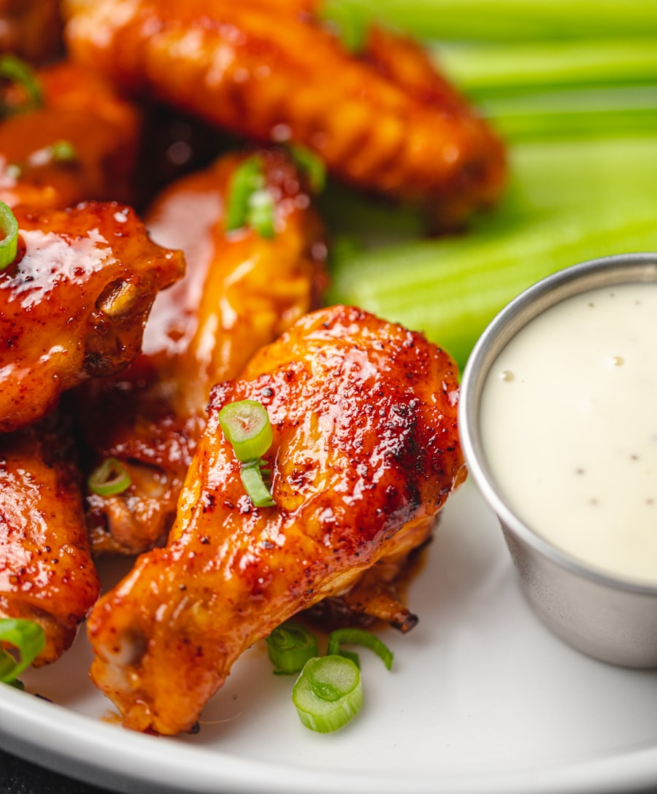

Authentic Buffalo Pizza, Crispy Wings & Beef on Weck
Experience true 716 tradition in Charlotte and Matthews. Golden focaccia-like crusts with light char, semi-sweet vine-ripened tomato sauce, whole-milk mozzarella, and signature cup-and-char pepperoni crisped to perfection.

The Original Buffalo Cup & Char
Thick airy crust baked in steel pans, rich tomato sauce with subtle sweetness, generous whole-milk mozzarella, and charred pepperoni cups that hold flavorful savory oils.
What Makes Buffalo Pizza Extraordinary?
Not thin like NYC, not deep-dish like Chicago. Buffalo pizza sits in the golden midpoint: doughy yet crisp, lightly sweet tomato sauce, and brimming with caramelized cheeses.
The Golden Crust
Proofed for 24 hours to achieve an airy, pillowy interior with a sturdy golden-brown bottom that easily supports generous mountains of cheese and meats without flopping.
Cup & Char Pepperoni
Natural casing pepperoni sliced thick so each piece curls into a crispy little goblet in high-heat stone deck ovens, sealing in deep smoky spice and caramelized edges.
Sweet Vine-Ripened Sauce
Crafted from California Stanislaus plum tomatoes simmered with a hint of natural cane sugar, garlic, and wild oregano to balance the rich whole-milk mozzarella.
From Deck Ovens to Kummelweck Rolls
Every recipe honors traditional Western New York recipes perfected over decades.

Authentic Jumbo Buffalo Wings
Fresh non-breaded jumbo wings fried extra crisp and shaken in our signature Frank's RedHot & sweet dairy butter blend. Served with chunky house-made blue cheese and celery.

Slow-Roasted Beef on Weck
Tender thin-sliced roast beef dipped in savory au jus, piled high on a freshly baked kimmelweck roll crusted with kosher salt and caraway seeds. Served with spicy atomic horseradish.

Full Sheet Party Pizza (24 Slices)
The ultimate Buffalo party staple. 24 square-cut thick slices baked in a full commercial sheet pan. Perfect for tailgate parties, corporate luncheons, and family gatherings.
The Carolinas' Home for Buffalo Game Day Feasts
Whether cheering on football Sundays, hockey playoffs, or hosting an office tailgate in Uptown, Bisonte delivers piping hot full sheet pizzas, 50-wing buckets, and Beef on Weck platters configured to your exact headcount.
Popular Party Combo
The Stadium Tailgate
Includes 1 Full Sheet Cheese & Pepperoni Pizza (24 slices), 50 Jumbo Crispy Wings (up to 2 sauces), Large House Salad, and 2-Liter Sodas. Feeds 15-20 guests.
Visit Us in Uptown or Matthews
Dine-in, curbside pickup, and direct corporate catering delivery.
Uptown Pizzeria
715 S. Cedar Street, Charlotte, NC 28202
Steps from Bank of America Stadium and Romare Bearden Park.
Phone: (704) 377-3999
Hours: Mon-Thu 11am-9:30pm | Fri-Sat 11am-10:30pm | Sun 12pm-9pm
Matthews Pizzeria
1381 E. John Street, Matthews, NC 28105
Serving Matthews, Stallings, Indian Trail, and South Charlotte.
Phone: (704) 844-8445
Hours: Mon-Thu 11am-9:30pm | Fri-Sat 11am-10:30pm | Sun 12pm-9pm